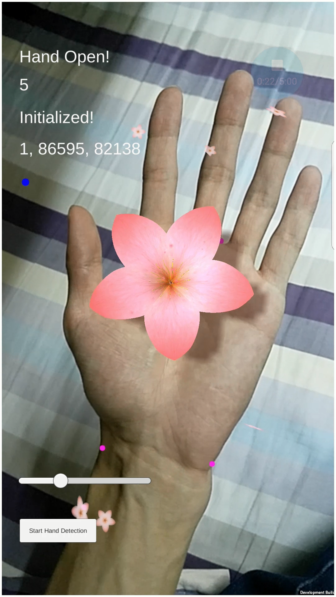
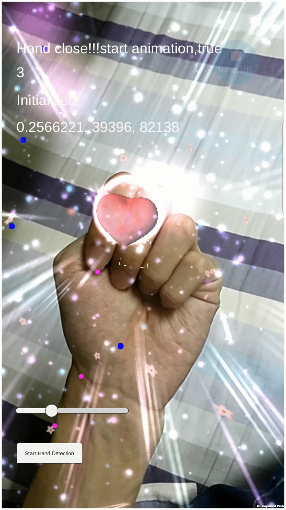
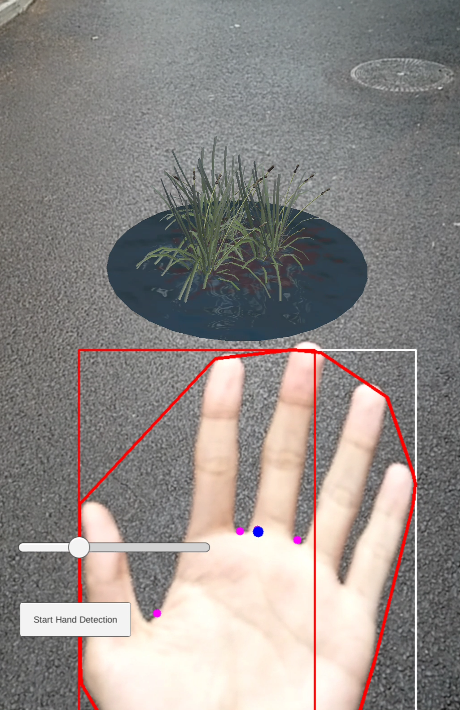

《诗经》作为中国古代诗歌的源头，其中有众多描写植物的浪漫诗句。目前，以《诗经》中的植物为题材的作品以书籍、绘画居多。增强现实技术通过摄像头捕获现实场景，在分析场景后将虚拟的信息与之叠加，具有虚实融合的视觉体验。本论文将重点研究《诗经》植物在增强现实中的手势交互方法。
本论文利用OpenCV完成了面向增强现实应用的静态手势和动态手势的识别。首先，基于肤色特征完成了人手区域分割，在人手区域图像上计算凸包，以凸包的特征量来描述手势状态。之后，针对静态手势识别，完成了手掌和拳头的识别；针对动态手掌张合识别，完成了最远点到凸包距离的归一化，定量描述手掌张合状态；针对动态手掌移动识别，通过凸包的矩计算出手掌质点坐标，以坐标在水平方向的变化判定手掌移动状态。最终，配合Vuforia SDK在Unity中将三种手势识别方法分别应用到了桃花、荷花和芦苇的交互体验上。
通过以上研究，用户可以使用手机通过手势变化与虚拟植物互动，加深了用户对植物文化的感知和体验，为文学作品的动态交互展示提供了新的参考。



本论文从《诗经》中选取了三种具有内涵的植物作为场景设计依据，分别为：桃花、荷花、芦苇。
- 桃花,相关诗句及篇章：“桃之夭夭，灼灼其华”（《周南•桃夭》）
- 荷花,相关诗句及篇章：“山有扶苏，隰有荷华”（《郑风•山有扶苏》）
- 芦苇,相关诗句及篇章：“蒹葭苍苍，白露为霜”（《秦风•蒹葭》）